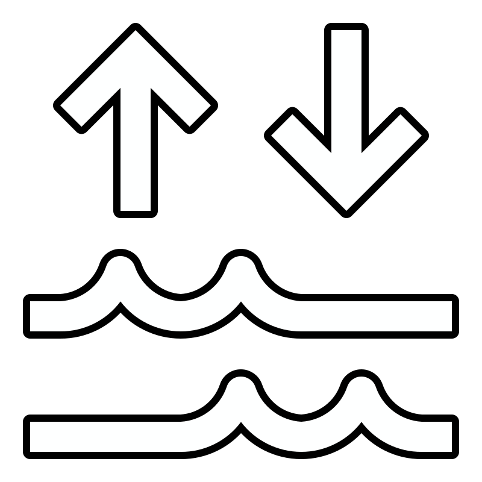

How Climate Change Affects Coral Reefs

Warming Ocean
Coral reefs are very sensitive to water temperature. Greenhouse gases from human activity are warming
the ocean,
and this heat puts corals under thermal stress. It's the leading cause of coral bleaching, which
happens like this:
- Corals have tiny algae called zooxanthellae living in their tissue. The algae give corals their color and are their main source of food
- When the water gets too warm, the coral pushes the algae out and turns pale or white. That's “bleaching.”
- A bleached coral isn't dead yet. If the heat lasts too long, though, it starves and becomes more likely to get diseases.
- In 2005, the U.S. lost half of its Caribbean coral reefs in a single year from one massive bleaching event.
Sea Level Rise
Sea level rise may sound harmless to something that already lives underwater, but it can still hurt coral reefs, especially ones close to land:
- Rising water erodes shorelines, and the loose sediment washes onto nearby reefs and can smother the coral.
- Stirred-up sediment makes the water murky and blocks the sunlight the coral's algae need for photosynthesis.
- Deeper water means less light reaches the bottom of a reef, so corals in the deepest parts can starve.
- Single corals can grow fast, but a whole reef grows upward much more slowly, so it may not keep up with the rising sea.

Changes in Storm Patterns
Climate change is affecting how often tropical storms form and how strong they get. Stronger, more frequent storms can tear coral reefs apart:
- Powerful waves break, flip and loosen corals, and can wipe out large parts of a reef in one storm.
- After Hurricanes Irma and Maria in 2017, about 12% of the shallow reefs NOAA surveyed in Puerto Rico had broken or loose corals.
- Reefs protect coastlines by absorbing wave energy. When storms damage reefs, nearby coastal communities face more flooding.
- After those storms, NOAA divers reattached more than 8,700 broken corals at 35 reef sites in Puerto Rico.
Changes in Precipitation

A change in precipitation is noted by increased heavy rains and stormwater runoff. This increased
runoff
of freshwater can pose the following problems for coral reefs:
- Freshwater can dilute the salinity of ocean water, which can result in stress of and/or killing of shallow-water corals.
- Rain washes sediment into reefs, which then settles onto corals and can block their ability to eat and breathe.
- In addition to the above, murky water from sediment can cut off sunlight, further starving coral.
- Land-based pollutants carried by rainwater results in algae overgrowth. This algae will overwhelm coral reefs and even suffocate slow-growing corals.

Altered Ocean Currents
Without steady ocean currents, coral reefs will starve. Corals feed off of plankton and organic
matter that they pull out of ocean curent, and when currents
begin to shift from their regular paths, food can completely bypass entire reefs.
In addition to eating, coral reefs rely on steady ocean currents to migrate coral larvae to other
areas of the ocean to do the following:
- Find new homes
- Settle on dying reefs to support recovery
- Spread genetic diversity across other coral populations to combat inbreeding
Ocean Acidification

When seawater absorbs excess carbon dioxide from the atmosphere, carbonic acid forms which in turn lowers the water's pH levels. This then reduces the levels of carbonate ions in the seawater, which corals use to build and maintain their skeletons. Weaker skeletons means the brittle corals cannot expand and growth rates decrease rapidly.